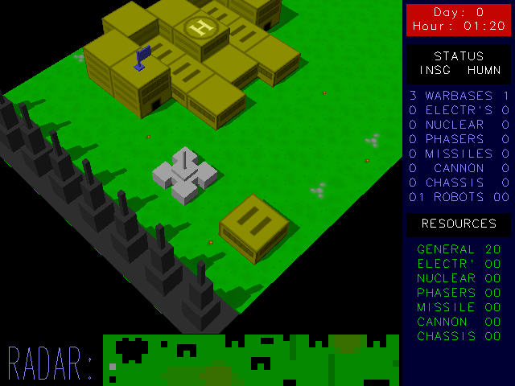
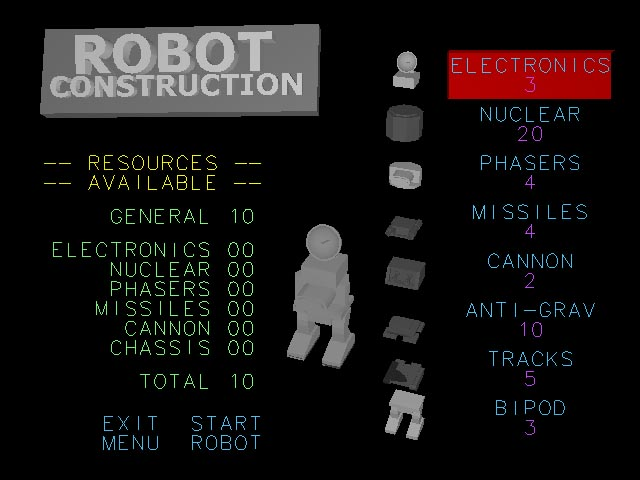

NETHER EARTH REMAKE
by
Santi Ontañón
1.- Introduction
Nether Earth was the first real-time strategy game in
the history. And has almost all the tipical components of modern strategy
games: combat units, resources, war bases, a map that has to be explored
and an enemy to fight with. In the screenshot below you can see the main
screen of Nether Earth:

The screen in divided in 3 parts:
- The game screen.
- The radar screen.
- The menu screen.
The game screen is the top-left part. There you
can see a 3d view of what is happening in the game. At the begining of the
game, you can see 3 main things there: The terrain, the buildings
and the control ship. The terrain is very important, the grass is
the best terrain, your combat units will move very fast through grass. But
there are other type of terrains: rocks, that slow down the movement of your
units, and holes, that can only be passed by flying over them.
The control ship is what you can command by using your
keyboard. The control ship is undestructible, and you can freely move it
through the map.
Another important this are the buildings. There are several
kind of buildings: walls, factories and warbases. The walls
are simply that: obstacles. The factories are the buildings where the basic
assembly pieces for building your combat units are build. It is important
to capture as many factories as possible. The factories are easily identificable
because they have a "C" shape. But the most important buildings of all are
the warbases. The warbases are huge buildings with a big "H" over them. In
the factories is where the combat units are assembled. To build a combat
unit land your control ship over the big H.
The radar screen is the bottom-left part of the
screen, and gives you a tactical view of the map.You can see there a schematic
view including terrain types, buildings and combat units.
The menu screen is on the rightmost part, and is
where all the extra information is displayed.You can see there the time,
statistics of the game etc.
2.- The goal
As in most strategy games, your goal is to kill the enemy.
The enemy starts at the oposite side of the map, and will start building
combat units to send against you from the very first moment.
3.- The robots
When you land over a warbase with you control ship, you
enter the robot construction screen, shown below:

In the robot construction screen you can choose the pieces
that will be assembled to build a new combat unit, i.e. a ROBOT. The
most exciting pat of Nether Earth is that it allows you to design you own
robots. Each piece costs some resource points. You must have enough resource
points to build your robot. Ah! and remember that the entrance of
your warbase has to be empty in order to build a robot!
You can build robots by using the following construction
pieces:
Traction pieces:
- BIPOD: The simplest traction piece.
It's very slow, but very resistent, and will give to your robot some extra
shield points.
- TRACKS: A fast traction piece, it's not as
expensive as the antigravitational device, but is quite fast.
- ANTIGRAVITATIONAL DEVICE: The fastest traction
piece. But also expensive.
Weapons:
- CANNONS: The cheapest weapon, and of course
the less powerful.
- MISSILES: A great weapon, more powerful than
cannons.
- PHASERS: The most effective weapon.
- NUCLEAR BOMB: The most destructive weapon.
Once fired, it will destroy all the robots and buildings near the robot
that has the bomb (including it).
Special:
- ELECTRONIC BRAIN: This piece enhances the
intelligence of the robots, allowing them to perform your orders more effectively.
As more pieces you put to your robot, more shield points
will it have, so it's important that if you have enough money, put as many
weapons as you can into your robots!
5.- The game
The most important thing that you have to take car of
in Nether Earth is your resource points. As more resource points you
have, you will be able to build stronger robots. There are two type of resource
points: general resource points and specialized resource points.
General resource points can be spend in any kind of piece for your robots,
but specialized resource points can only be spend on certain types of pieces.
There are 6 types of specialized resource points: electronics points, nuclear
points, phaser points, missile points, cannon points and chassis points.Electronic
points can only be spend on electronic brains, nuclear points only in nuclear
bombs, phaser points in phasers, missile points in missiles, cannon points
in cannons and finally chassis points can be spend in any kind of traction
piece.
To gain resource points you have to capture factories
and warbases. Each factory or warbase can have a blue or red flag over it.
A blue flag means that the factory belongs to you, and a red flag means that
the factory belongs to the enemy. Each time a day passes (you can see the
time in the top part of the menu screen), your buildings produce new resource
points. Each warbase give you 5 "general" resource points per day. And each
factory produces 2 "specialized" resource points per day.
Once you have built some robots, you have to give orders
to them. To give orders to a combat unit, just land over it. Then,
the robot menu will appear. In the robot menu, you can directly control
your robot (using the keyboard). You can give orders to a robot, or
enter in the combat mode.
The direct control mode allows you to move your robot
through the map. In the combat mode you will be able to move your robot and
also to fire the weapons of your robot. But the most usual way to control
a robot is to give orders to it. By giving orders to a robot, you can assign
a task to your robots, and they will try to perform it automatically. You
can assign several tasks to a robot:
- STOP & DEFEND: The robot will stand, and if an enemy
robot aproaches it will try to destroy it.
- ADVANCE ?? MILES: The robot will advance as many miles
as you tell it.
- RETREAT ?? MILES: The same as before, but retreating.
- SEARCH AND CAPTURE: You can instruct your robots to
seek for factories or warbases and capture them for you.
- SEARCH AND DESTROY: The same, but instead of capturing
the factories or warbases, the robot will try to destruct them (you can also
tell a robot to search and destroy enemy robots!). Note that to be able
to destroy a building, a robot needs a nuclear bomb!
Before giving orders to a robot, you must have in mind
that if a robot does not have an electronic brain, its behaviour will not
be very optimal!
6.- The remake
In this remake, I've tried to make a game the most similar
possible to the original one. Just tell me if there is something that you
don't like, or if you have some ideas to improve the remake! Thank you for
playing my game!!!